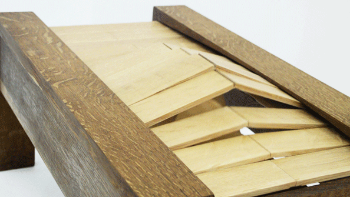
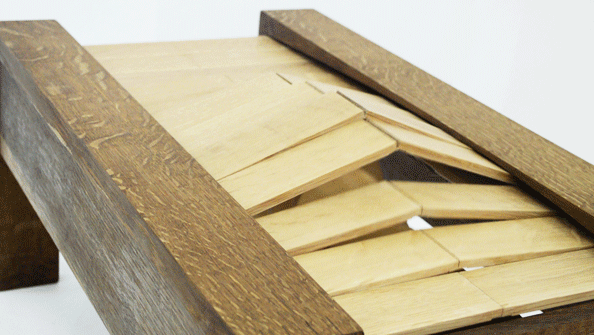
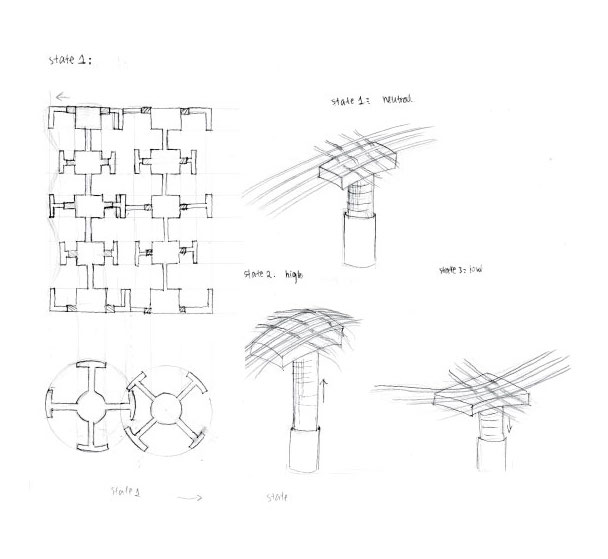
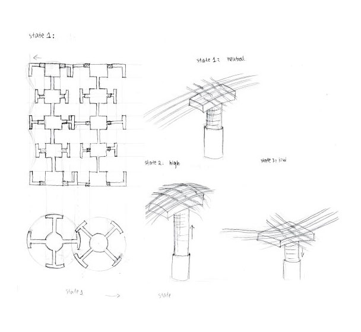
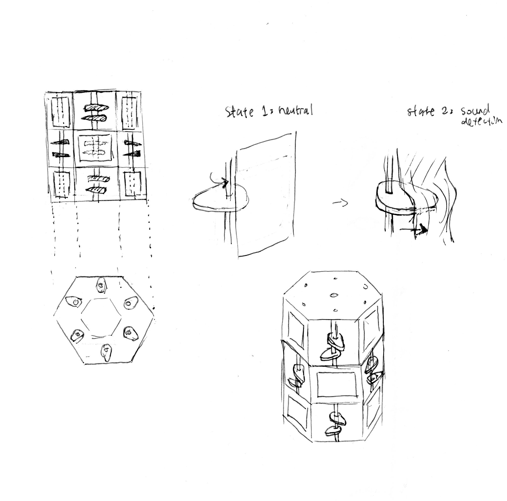
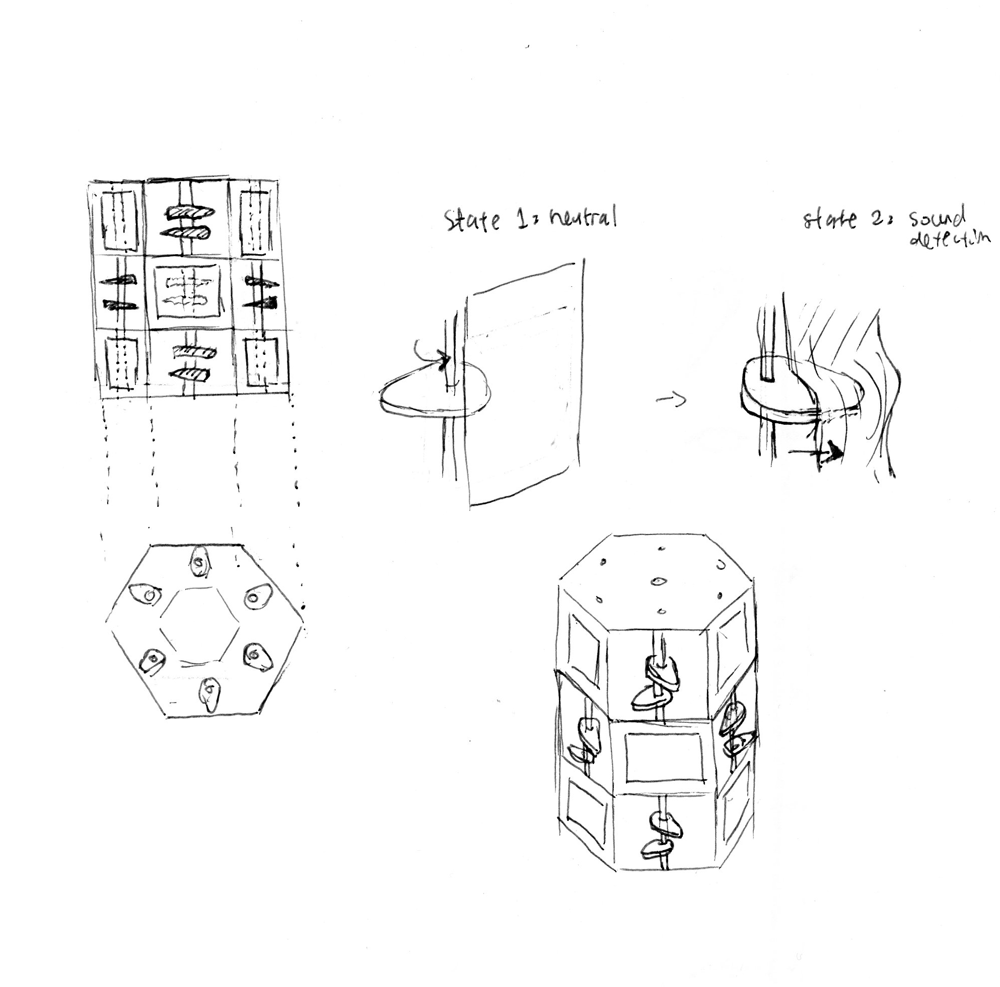

Phase I
Our preliminary idea was to utilize a kinetic sculpture to visualizing sound in order to communicate the amount of sound pollution that we input into our environment. We wanted to our audience not to only acknowledge their physical imprint they leave on the world, but also the noise imprint they leave behind. We also researched other design precedents to learn how other designers utilized kinetic sculpture as a medium for communication.
- Barkow & Leibinger’s Kinetic wall
- Joyce Lin’s Tidal
- Shapeshifter
- Triple Helix
Our insights from the design precedents:
- Using reverse engineering, we learnt how to simple mechanism can create powerful and fluid movement with various types of materials such as cloth, wood, string, and metal.
- Learn how to take a simple form and transform them into dynamic and sophisticated forms.
We were also influenced and inspired by the mechanics of the weaving machines, and the use of threads as the main component for our sculpture. Through research, experimentation, prototyping, we found the use of lightweight material affords a fluid and flowy movement of our kinetic sculpture. We were also inspired and interested in the organic motions.

 

 

Phase II
phase two content
We were also influenced and inspired by the mechanics of the weaving machines, and the use of threads as the main component for our sculpture. Through research, experimentation, prototyping, we found the use of lightweight material affords a fluid and flowy movement of our kinetic sculpture. We were also inspired and interested in the organic motions.

 

Phase III
phase three content
We were also influenced and inspired by the mechanics of the weaving machines, and the use of threads as the main component for our sculpture. Through research, experimentation, prototyping, we found the use of lightweight material affords a fluid and flowy movement of our kinetic sculpture. We were also inspired and interested in the organic motions.